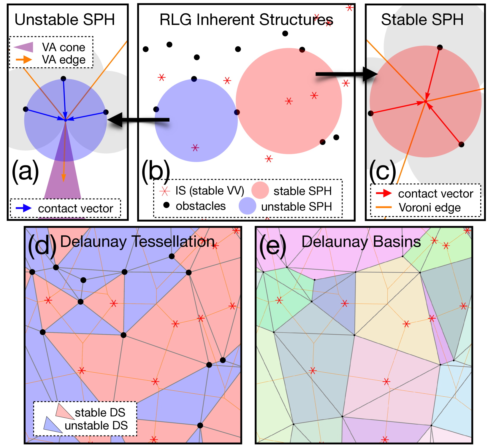

This project investigates the geometry of random cages formed by hard spheres. We developed a minimal model to study these cages in infinite-dimensional limits and examined their behavior in finite dimensions. Additionally, the work on jamming transitions across high-dimensional systems contributed to the understanding of the universality class for hard spheres.
